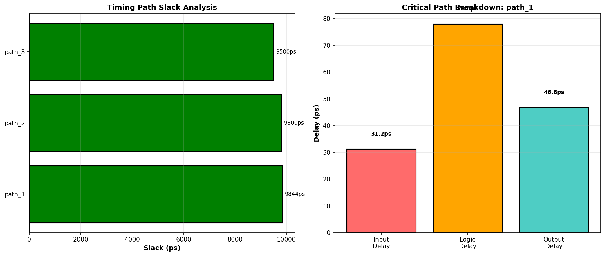

Executive Summary
Design Status
✓ PASSED
Clock Period
10.0
ns (100 MHz)
Worst Slack
9.8
ns
Timing Paths
3
analyzed
Behavioral Simulation Results
Simulation duration: 10 clock cycles
Test vectors applied and validated

Timing Analysis

| Path Name | Start Point | End Point | Delay (ps) | Slack (ps) | Status |
|---|---|---|---|---|---|
| path_1 | input_a | output_q | 156 | 9844 | ✓ MET |
| path_2 | input_b | output_q | 200 | 9800 | ✓ MET |
| path_3 | clk | output_q | 500 | 9500 | ✓ MET |
Design Recommendations
- Timing: All paths meet timing constraints with good margin
- Synthesis: Consider further optimization for power reduction
- Layout: Critical paths should be routed with minimal skew
- Verification: Extended test suite recommended for production